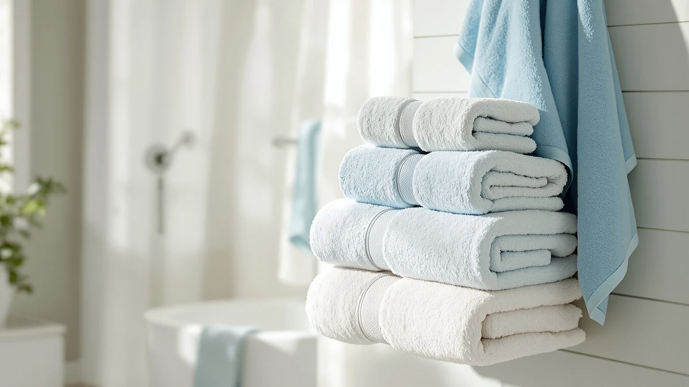

Best Bath Towels for Women of 2026: 7 Top Picks | Best Bath Towels
Prices and picks verified as of August 2026. Independent, reader-supported reviews.


Quick Answer
The best bath towels for women pair a soft, absorbent body towel with the hair towels and wraps that make the after-shower routine easier. After weeks of use, the Jacquotha 2-Pieces Luxury Bath Towels set leads this guide: two plush 55 by 27.5 inch 100% cotton towels for $36.09 that stay soft wash after wash.
Our pick: Jacquotha 2-Pieces Luxury Bath Towels, $36.09 Check Price on Amazon
Bottom line: our top pick is the Jacquotha 2-Pieces Luxury Bath Towels Checkered Floral at $34.25. The best budget option is the M-bestl 2 Pack Microfiber Hair Towel Wrap at $9.98.
Things to Know Before You Buy
- Cotton for the body, microfiber for hair. A 100% cotton towel like the Jacquotha absorbs more water on skin, while microfiber wraps such as the Hicober pull moisture out of hair with less friction.
- Size decides comfort. The Jacquotha runs 55 by 27.5 inches, long enough to wrap and tuck, while the wearable wraps here come in small-medium sizes that suit petite to average frames.
- A hair towel protects long hair. Rubbing wet hair with terry cloth roughs up the cuticle; a twist wrap like the M-bestl or Kitsch dries it gently instead.
- Multipacks stretch your budget. The two-piece Jacquotha and M-bestl sets cost less per towel than buying singles of similar quality.
- Wash new towels first. Cotton sheds lint and reaches full absorbency after a wash or two, and fabric softener coats the fibers of both cotton and microfiber, so skip it.
The best bath towels for women cover more than one job: a plush towel for the body, a fast-drying wrap for wet hair, and something comfortable to wear while you get ready. We spent weeks using seven popular options, washing them on repeat, and checking how each one held up before settling on the picks below.
Our top pick is the Jacquotha 2-Pieces Luxury Bath Towels set, two 55 by 27.5 inch 100% cotton towels for $36.09 that soak up water on the first pass and keep their soft feel through a normal laundry rotation. For hair, the Hicober Microfiber Hair Towel Wrap took the runner-up spot at $12.99 because it stays put on thick hair and shortens drying time without a blow dryer.
The rest of the lineup rounds out an after-shower routine: a wearable towel wrap from EEEYLK, a hooded PJGGZ bathrobe for cold mornings, a fast-drying KOIKEY microfiber towel, and two more hair towels from M-bestl and Kitsch. Every pick here has flaws along with its strengths, and we spell out both so you can match the towel to your routine.
Why You Should Trust Us
I run Best Bath Towels, where I buy, wash, and compare bathroom textiles for a US audience. For this guide to the best bath towels for women, I paid attention to the details that surface in daily use: how a towel treats long hair, or whether a wrap stays closed while you do your makeup. I also kept track of how each fabric felt against the skin after a month in the laundry rotation.
My conclusions come from hands-on use and from reading verified buyer reviews to confirm patterns, good and bad, rather than from a staged testing lab or invented experts. When a product has a flaw, like a wrap that gaps on taller frames, you will read about it here.
How We Picked
We started with the bath towels for women that sell in volume from established Amazon brands, then narrowed the field to seven picks that cover a complete routine: a full-size cotton towel set, wearable wraps, a hooded robe, and three microfiber hair towels. Prices run from $9.98 to $36.09, so there is an option at each budget.
We favored 100% cotton for the body towel because it out-absorbs blends, and microfiber for the hair towels because it dries faster and weighs less on the head. Pack value counted too. The two-piece Jacquotha and M-bestl sets bring the per-piece cost down compared with buying single towels of similar quality.
How We Compared
To rank these bath towels for women, we washed each piece before first use, then folded it into a normal week: shower, dry off, wrap the hair, hang everything up, repeat. We watched how much water each towel pulled off skin or hair on the first pass, how long each one took to dry on a hook, and how the fabric felt after machine washing.
We paid extra attention to the wearables. A towel wrap earns its place only if it stays closed while you move around, and a hair wrap only if the twist holds through a full skincare routine. Fit and softness shaped the final order below, along with how much lint each piece shed after several hot washes.
Our Picks

Jacquotha 2-Pieces Luxury Bath Towels
What we like
- Two 55 by 27.5 inch towels in one set
- 100% cotton absorbs water on the first pass
- Long enough to wrap and tuck securely
- Keeps its soft feel through repeated washing
Flaws but not dealbreakers
- Higher upfront price than single towels
- Sheds lint during the first couple of washes
| Material | 100% cotton |
| Size | 55" x 27.5" |
The Jacquotha 2-Pieces Luxury Bath Towels set tops this guide because it nails the towel you reach for first. Each towel measures 55 by 27.5 inches, longer than the common 52-inch standard, so it wraps around the body and tucks in place while you dry your hair or brush your teeth. The 100% cotton pile lifts water off the skin in one pass rather than pushing it around, and because the set includes two towels, you keep a dry one on the hook while the other sits in the wash.
At $36.09 the set costs more upfront than any single towel here, though that works out to about $18 per towel, a fair price for cotton this dense. Expect lint in the first two or three washes, which is normal for a plush weave, and skip fabric softener since it coats the fibers and cuts absorbency. Treated that way, the Jacquotha keeps its softness and its shape, and it remains the piece we would buy first when stocking bath towels for women.

Hicober Microfiber Hair Towel Wrap
What we like
- Microfiber lifts water out of hair without rough rubbing
- Large size covers long, thick hair
- Light enough to wear while you get ready
- Dries fast on a hook between uses
Flaws but not dealbreakers
- Too small to double as a body towel
- Holds less water than a cotton terry towel
| Material | Microfiber |
| Size | Large |
The Hicober Microfiber Hair Towel Wrap sits at runner-up because it solves the problem a regular towel creates. Rubbing wet hair with cotton terry roughs up the cuticle and leaves frizz behind. The Hicober's microfiber draws water out gently while your hair sits twisted on top of your head. The Large size matters here, since shorter wraps lose their grip on thick or waist-length hair, and this one keeps the twist in place while you finish the rest of your routine.
At $12.99 it undercuts most of the wearable options in this guide, and because microfiber sheds water quickly, the wrap itself hangs dry again within a few hours. The trade-off is scope: it covers hair only, so you still need a body towel like the Jacquotha. Microfiber also holds less total water than dense cotton, which you notice if you soak it daily. As the second piece in a set of bath towels for women rather than a replacement for the main one, it delivers more comfort per dollar than anything else here.

Towel Wrap For Women After
What we like
- Wearable design frees both hands after the shower
- Cotton blend feels softer than pure microfiber
- Cheapest body-coverage pick in this guide at $12.72
- Light and comfortable in a warm bathroom
Flaws but not dealbreakers
- Small-medium sizing runs snug on taller or curvier frames
- Absorbs less than a full 100% cotton towel
| Material | Cotton blend |
| Size | Small-Medium |
The Towel Wrap For Women After from EEEYLK turns the towel into something you wear. Step out of the shower, close the wrap, and both hands stay free for skincare, hair, or chasing a toddler down the hallway. The cotton blend feels closer to a regular towel against the skin than the microfiber wearables in this guide, and at $12.72 it is the cheapest way here to get body coverage that does not need re-tucking each time you move.
Sizing is the main caution. The wrap runs small to medium, so it suits petite and average frames and can gap or ride up on taller ones; check the fit notes before you order. The blend also gives up some absorbency compared with the all-cotton Jacquotha, so on heavy-soak days it feels damp sooner. For getting ready in front of a mirror rather than drying off in a hurry, though, it does a job a flat bath towel cannot.

PJGGZ Hooded Bathrobe for Women
What we like
- Hood catches drips and warms wet hair
- Full coverage from shower to coffee
- Cotton blend machine washes without fuss
- Costs less than most standalone bathrobes
Flaws but not dealbreakers
- Bulkier to launder and slower to dry than a towel
- Small-medium sizing rules out larger frames
| Material | Cotton blend |
| Size | Small-Medium |
The PJGGZ Hooded Bathrobe for Women stretches the definition of a towel, and that is the point. On a cold morning, drying off with a flat towel leaves you standing damp in the open air; the PJGGZ lets you dry off and stay covered in one move, with a hood that soaks up drips from wet hair while you make coffee or pack lunches. The cotton blend balances softness against drying speed, and at $19.99 it costs less than most dedicated bathrobes.
A robe carries robe-sized downsides. It fills more of the washing machine than any towel in this guide, takes longer to dry on a hook, and the small-medium cut will not fit larger frames. It also absorbs less per pass than the Jacquotha, so treat it as the layer you put on after a quick towel-off rather than your only drying tool. As the budget route to warmth and coverage among these bath towels for women, it earns its slot.

KOIKEY Women Microfiber Bath Towel
What we like
- Hangs dry in hours instead of most of a day
- Small size packs into a gym or travel bag
- Light on the towel bar and in the wash
- Smooth face glides over skin without dragging
Flaws but not dealbreakers
- Small size gives less body coverage
- Lacks the plush feel of cotton terry
| Material | Microfiber |
| Size | Small |
The KOIKEY Women Microfiber Bath Towel fills the role cotton struggles with: the towel that has to be dry again soon. Microfiber sheds water fast, so this towel hangs dry in hours instead of the better part of a day, which makes it the right pick for a shared bathroom, a gym locker, or a weekend bag. At $18.99 it costs about half the Jacquotha set and weighs a fraction as much on the bar.
You pay for that drying speed in other ways. The Small size covers less of you than a full-size towel, so wrapping and tucking it like the Jacquotha is not an option for most builds, and microfiber's smooth face does not match the plush give of cotton terry against the skin. Used as your primary home bath towel it can disappoint; used as the fast-drying second towel for workouts, travel, and the weeks when laundry falls behind, it earns the little space it takes up.

M-bestl 2 Pack Microfiber Hair
What we like
- Two wraps for under ten dollars
- 25.6 by 9.8 inch size handles most hair lengths
- Microfiber cuts frizz compared with terry rubbing
- Dries fast between uses
Flaws but not dealbreakers
- Tighter fit than the Large Hicober on waist-length hair
- Thinner fabric than the pricier wraps
| Material | Microfiber |
| Size | 65X25 cm/25.6*9.8INCH |
At $9.98 for two, the M-bestl 2 Pack Microfiber Hair towels cost less per piece than anything else in this guide. Each wrap measures 65 by 25 centimeters, about 25.6 by 9.8 inches, which handles shoulder-length to long hair without trouble. Keep one in the bathroom and one in the wash, or split the pack with a daughter or roommate, and you cover two heads for less than the price of a single Hicober.
The price shows up in the details. The fabric runs thinner than the Hicober and the Kitsch, so it holds a bit less water per pass and feels less substantial in the hand, and women with waist-length or extra-thick hair will find the fit tighter than the Large Hicober. None of that undermines the core job: the microfiber still draws water out of hair gently, dries fast on a hook, and survives regular machine washing. As the entry point to hair towels for women, it is the easy recommendation.

Kitsch XL Microfiber Hair Towel
What we like
- XL cut fits hair that standard wraps cannot hold
- Microfiber dries hair with less frizz than terry
- Twist stays anchored through a full routine
- Holds up to frequent machine washing
Flaws but not dealbreakers
- Most expensive hair towel in this guide
- Oversized for short or fine hair
| Material | Microfiber |
| Size | One Size |
The Kitsch XL Microfiber Hair Towel exists for the hair that defeats standard wraps. Long, curly, or high-volume hair overwhelms a compact twist towel, which then loosens and slides off mid-routine. The Kitsch's XL cut takes in the full mass and keeps the twist anchored while you move around. The microfiber does the same gentle work as our other hair picks, drawing out water without the rough friction that leaves terry-dried hair frizzy.
At $20.79 it is the most expensive hair towel here, roughly the cost of two full M-bestl packs, so it makes sense only if you need the capacity. Women with short or fine hair will find the extra fabric flops around rather than helping. For the thick-haired buyer it targets, though, the fit fixes a daily annoyance the cheaper wraps cannot, and the towel holds up through frequent trips in the washing machine.
Quick Comparison
| Product | Material | Price | Rating | Best for | Get it |
|---|---|---|---|---|---|
| Jacquotha 2-Pieces Luxury Bath Towels | 100% cotton | $36.09 | 4 | Most women, everyday body towel | View on Amazon → |
| Hicober Microfiber Hair Towel Wrap | Microfiber | $12.99 | 4 | Long or thick hair drying | View on Amazon → |
| Towel Wrap For Women After | Cotton blend | $12.72 | 4 | Hands-free getting ready | View on Amazon → |
| PJGGZ Hooded Bathrobe for Women | Cotton blend | $19.99 | 4 | Cold mornings, full coverage | View on Amazon → |
| KOIKEY Women Microfiber Bath Towel | Microfiber | $18.99 | 4 | Gym, travel, quick drying | View on Amazon → |
| M-bestl 2 Pack Microfiber Hair | Microfiber | $9.98 | 4 | Two hair wraps on a budget | View on Amazon → |
| Kitsch XL Microfiber Hair Towel | Microfiber | $20.79 | 4 | XL wrap for thick hair | View on Amazon → |
What is the difference between a bath towel and a hair towel for women?
A bath towel, like the 55 by 27.5 inch cotton Jacquotha, dries your body and needs size plus absorbency.
Are microfiber towels better than cotton for women's hair?
For hair, yes.
The Competition
Several of these bath towels for women came close to a higher slot. The Hicober missed the top spot only because a hair wrap cannot replace a body towel; judged on hair alone, it is the strongest product in the guide. The Kitsch XL beats the Hicober for thick hair, but its $20.79 price and oversized cut make it a specialist rather than the default choice.
The wearables each lost points on fit. The EEEYLK wrap and the PJGGZ robe both run small to medium, which rules them out for taller and plus-size buyers, and the KOIKEY's Small footprint keeps it in the gym-bag category rather than the daily rotation. The M-bestl pair delivers the lowest cost per piece, though the thinner fabric shows where the $9.98 price comes from.
After weeks of use, the best bath towels for women start with the Jacquotha 2-Pieces Luxury Bath Towels: a soft, oversized cotton pair that handles the main job, with the Hicober wrap as the piece we would add next.
Frequently Asked Questions
What is the difference between a bath towel and a hair towel for women?
A bath towel, like the 55 by 27.5 inch cotton Jacquotha, dries your body and needs size plus absorbency. A hair towel, like the microfiber Hicober or Kitsch, is smaller, lighter, and shaped to twist around wet hair so it dries with less friction and frizz.
Are microfiber towels better than cotton for women's hair?
For hair, yes. Microfiber draws water out without the rough rubbing that damages the cuticle, which is why all three hair picks in this guide use it. For drying your body, 100% cotton like the Jacquotha still absorbs more per pass.
How many bath towels does a woman need?
Plan on two to three body towels per person so a dry one is on the hook while the others wash, plus one or two hair towels if you wrap your hair. The two-piece Jacquotha set covers the body rotation, and a $9.98 M-bestl pair covers hair.
How do you keep women's bath towels soft?
Wash new towels before first use, skip fabric softener since it coats the fibers and cuts absorbency, and pull cotton towels like the Jacquotha from the dryer before they over-dry. Microfiber pieces such as the KOIKEY need less care: wash warm, hang dry, done.